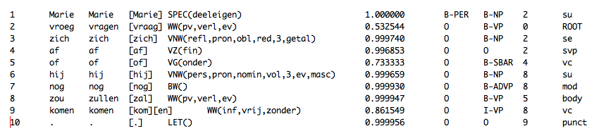

Demo


Frog is an integration of memory-based natural language processing (NLP) modules developed for Dutch. All NLP modules are based on Timbl, the Tilburg memory-based learning software package. Most modules were created in the 1990s at the ILK Research Group (Tilburg University, the Netherlands) and the CLiPS Research Centre (University of Antwerp, Belgium). Over the years they have been integrated into a single text processing tool. This has been further developed at the Centre for Language and Speech Technology at Radboud University Nijmegen, and currently maintained at the KNAW Humanities Cluster. The tool features a dependency parser, a base phrase chunker, and a named-entity recognizer module were added more recently. Where possible, Frog makes use of multi-processor support to run subtasks in parallel.
Various (re)programming rounds have been made possible through funding by NWO, the Netherlands Organisation for Scientific Research, particularly under the CGN project, the IMIX programme, the Implicit Linguistics project, the CLARIN-NL programme and the CLARIAH programme.
Frog can tokenize, tag, lemmatize, and morphologically segment word tokens in Dutch text files, will assign a dependency graph to each sentence, will identify the base phrase chunks in the sentence, and will attempt to find and label all named entities.
Frog produces FoLiA XML, or a tab-delimited column-formatted output, one line per token, that looks as follows:
The ten columns contain the following information:
The Frog manual is available here. It describes in detail how to install Frog, how to use it, as well as explains the underlying principles upon which Frog is built.
The API reference is available from here.
If you use Frog for your own work, please cite the following paper:
Van den Bosch, A., Busser, G.J., Daelemans, W., and Canisius, S. (2007). An efficient memory-based morphosyntactic tagger and parser for Dutch, In F. van Eynde, P. Dirix, I. Schuurman, and V. Vandeghinste (Eds.), Selected Papers of the 17th Computational Linguistics in the Netherlands Meeting, Leuven, Belgium, pp. 99-114
Frog, formerly known as Tadpole and before that as MB-TALPA, was coded by Bertjan Busser, Ko van der Sloot, Maarten van Gompel, and Peter Berck, subsuming code by Sander Canisius (constraint satisfaction inference-based dependency parser), Antal van den Bosch (MBMA, MBLEM, tagger-lemmatizer integration), Jakub Zavrel (MBT), and Maarten van Gompel (Ucto). In the context of the CLARIN-NL infrastructure project TTNWW, Frederik Vaassen (CLiPS, Antwerp) created the base phrase chunking module, and Bart Desmet (LT3, Ghent) provided the data for the named-entity module.
Maarten van Gompel designed the FoLiA XML output format that Frog produces, and also wrote a Frog client in Python. Wouter van Atteveldt wrote a Frog client in R.
The development of Frog relies on earlier work and ideas from Ko van der Sloot (lead programmer of MBT and TiMBL and the TiMBL API), Walter Daelemans, Jakub Zavrel, Peter Berck, Gert Durieux, and Ton Weijters.
The development and improvement of Frog also relies on your bug reports, suggestions, and comments. Use the github issue tracker or mail lamasoftware (at) science.ru.nl.
Frog is free software; you can redistribute it and/or modify it under the terms of the GNU General Public License v3 as published by the Free Software Foundation.
To download and install Frog:
Because of file sizes and to cleanly separate code from data, the data and configuration files for the modules of Frog have been packaged separately:
To compile these manually consult the included INSTALL documents, you will need current versions of the following dependencies of our software:
To let Frog leap, simply invoking frog without arguments will produce a list of available commandline options. Some main options are:
Frog can be used from Python through the python-frog binding, which can be downloaded and installed by running pip install python-frog.
import frog
frog = frog.Frog(frog.FrogOptions(parser=False))
output = frog.process_raw("Dit is een test")
print("RAW OUTPUT=",output)
output = frog.process("Dit is nog een test.")
print("PARSED OUTPUT=",output)
If you want to connect to the Frog server using Python, then you can use the Frog client included in PyNLPl. pip install pynlpl.
from pynlpl.clients.frogclient import FrogClient
port = 8020
frogclient = FrogClient('localhost',port)
for data in frogclient.process("Een voorbeeldbericht om te froggen")
word, lemma, morph, pos = data[:4]
#TODO: verdere verwerking per gefrogged woord
Wouter van Atteveldt has developed a Frog client for R, frogr. This package contains functions for connecting to a Frog server from R and creating a document-term matrix from the resulting tokens. Since this yields a standard term-document matrix, it can be used with other R packages e.g. for corpus analysis or text classification using RTextTools.
Machiel Molenaar developed a Frog client for Go, aptly named gorf.
Without the dependency parser, Frog will process about 900 words per second, and consume 542 MB on a 64-bit Linux architecture. With the parser, Frog's speed reduces to about 200 words per second, taking just under 1200 MB of memory; you have been warned.